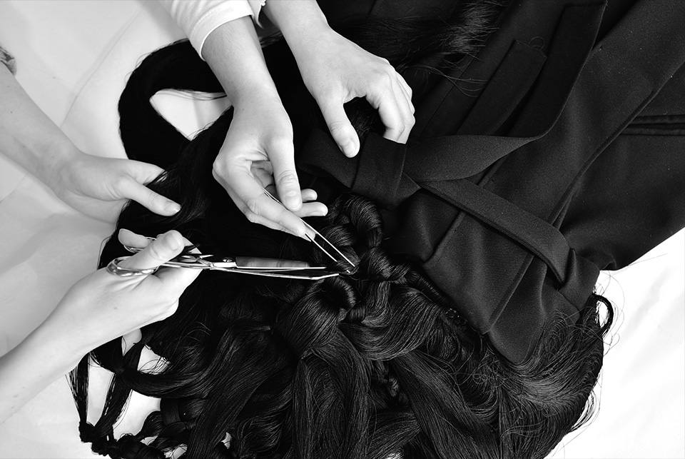
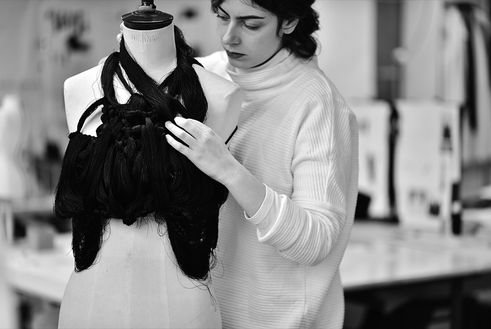
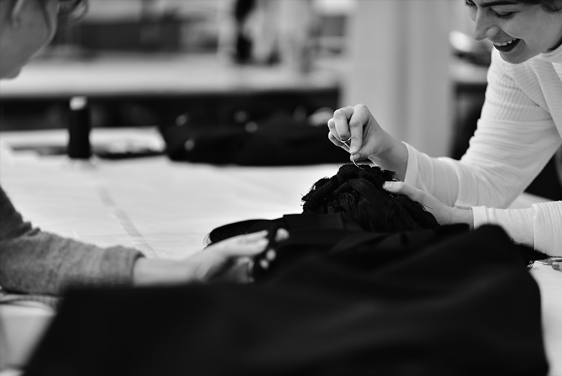
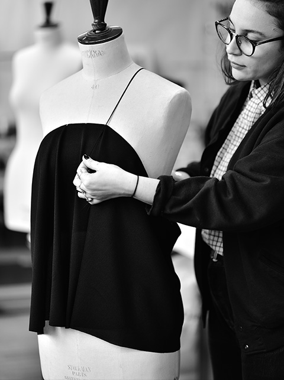

La Clinique Vestimentaire est un studio de
design et de recherche dont les projets
œuvrent autour du même thème : le vêtement.
Nous tentons de répondre de façon alternative à la production industrielle contemporaine
de textile et de vêtement en proposant un
nouveau système de conception vestimentaire : le prêt-à-mesure.
Notre objectif est de proposer des vêtements
confortables et adaptés aux besoins contemporains.
English La Clinique Vestimentaire est un studio de
design et de recherche dont les projets
œuvrent autour du même thème : le vêtement.
Nous tentons de répondre de façon alternative à la production industrielle contemporaine
de textile et de vêtement en proposant un
nouveau système de conception vestimentaire : le prêt-à-mesure.
Notre objectif est de proposer des vêtements
confortables et adaptés aux besoins contemporains.